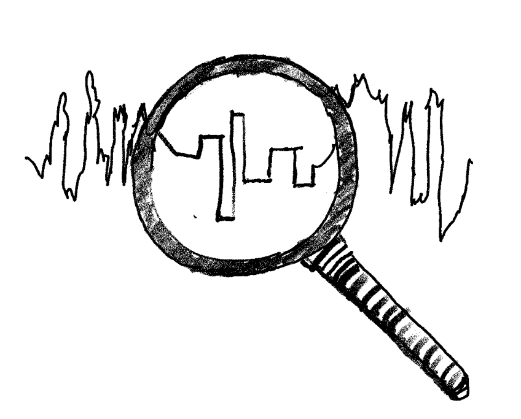

Measuring the quality of MCMC output
Pitch
Markov chain Monte Carlo (MCMC) methods are now employed in nearly all fields of science. Along with a constant development of new methods, research on MCMC has led to steady improvements in our theoretical understanding of these techniques. However, most theoretical tools translate only vaguely into guidelines for practitioners, for example regarding the tuning of parameters and the choice of iterations to perform. How to address questions of “quality control” for practical MCMC algorithms has seemed to attract less attention than the development of new algorithms.
This event puts a spotlight on the question of assessing the quality of MCMC samples. It brings together 1) people who work on the development of methods addressing that question, and 2) people who encounter challenging sampling problems in applications. The goal is to bridge methodology and practice, so that methodologists can update their benchmarks and practitioners can update their toolbox. The workshop is intended to highlight advances, put people in touch, share experiences, identify challenges, and start collaborations among participants.
Dates, format, instructions
The workshop will be fully online. This website will collect relevant material, including posters submitted by participants and a link to a YouTube channel for pre-recorded video presentations. This content will be freely available and we hope that this website will remain a useful portal to this topic long after the workshop!
You can submit a (~20 minute) video recording of a research presentation and/or a poster by emailing the organisers (see addresses below). For videos, these materials should preferably be an mp4 file or a YouTube link, in addition to a PDF file for slides. Poster submissions should be PDF files.
All participants are encouraged to share some material, in order to facilitate interactions during the live sessions. If you are too shy to send a video or a poster, consider sharing some slides describing your research interests in connection to the workshop topic. You can also send us a link to a paper or to some code, and we will paste it here.
The workshop event itself will be made of three live sessions on Zoom and gather.town, on different dates and times so as to accommodate different time zones. Each session will each have a different theme, and will be organized roughly as:
- introductory words (a bit longer during the first session),
- a bunch of very short presentations advertising prerecorded talks, posters, papers etc,
- a discussion, structured along questions specific to each session's theme,
- a poster session on gather.town (open for at least 90 minutes each time)
The live sessions will be as follows.
-
Session 1: 11am-2pm UTC on Wednesday 6th October.
Theme: general view on MCMC diagnostics. The first session will be an opportunity to comment on the meaning of "convergence diagnostics", review old and new methods and their limitations. -
Session 2: 1pm-4pm UTC on Thursday 14th October.
Theme: diagnostics for specific samplers. Here the focus will be on modern samplers, and the specific challenges that they raise when it comes to convergence diagnostics. For example: MCMC for phylogenetic inference, piecewise-deterministic Markov processes, gradient-based MCMC. -
Session 3: 3pm-6pm UTC on Friday 22nd October.
Theme: Theory and practice, bridging gaps, and ways forward. The last session will be an opportunity to review emerging practical challenges and discuss ways forward for practitioners, methodologists, and theoreticians, identifying fruitful avenues of research, collaborations.
There will be a prize for best presentation or poster, awarded to a junior researcher, selected by the advisors of the workshop listed below! The winner (or winners) will be announced shortly after the end of the workshop.
Youtube channel
We have set up a youtube playlist as part of the ISBA Youtube account , with the shared pre-recorded videos (in no particular order). We'd be happy to add your video! And thanks ISBA!
Youtube playlist for the workshop
Confirmed participants
The following individuals are confirmed participants and advisors for the workshop.
- Niloy Biswas, Harvard University. Slides, video and paper on "Estimating Convergence of Markov chains with L-Lag Couplings". Slides, video and paper on "Coupling-based convergence assessment of some Gibbs samplers for high-dimensional Bayesian regression with shrinkage priors". Slides and video on "Bounding Wasserstein distance with Couplings".
- Moon Duchin, Tufts University.
- Pierre E. Jacob, Essec Business School. Poster "Unbiased estimation of the asymptotic variance of MCMC estimators using coupled chains".
- Lester Mackey, Stanford University and Microsoft Research New England.
- Julia Palacios, Stanford University.
- Gareth Roberts, University of Warwick.
- Vivekananda Roy, Iowa State University. Slides on "Convergence diagnostics for MCMC". Youtube video. Link to associated paper.
- Leah South, Queensland University of Technology.
- Beka Steorts, Duke University.
- Catalina Vallejos, University of Edinburgh.
- Dootika Vats, Indian Institute of Technology, Kanpur. Slides "SimTools: Variability assessment for simulation methods in R" and link to software.
- Aki Vehtari, Aalto University. Youtube video on "How many digits to report and how many iterations to run".
The following individuals are confirmed participants of the workshop.
- Ahmad Hakiim Jamaluddin, UNSW Sydney.
- Alberto Cabezas, Lancaster University.
- Andi Wang, University of Bristol. Slides "Subgeometric convergence of PDMP MCMC methods". Link to associated paper. Youtube video.
- Andrew Magee, UCLA. Slides "How trustworthy is your tree? Bayesian phylogenetic effective sample size through the lens of Monte Carlo error". Youtube video.
- Angela Bitto, JKU LINZ.
- Anh Tran, Uncertainty Quantification and Optimization, Sandia National Laboratories.
- Ardjen Pengel, Delft University of Technology.
- Atlanta Chakraborty, NUS.
- Ben Swallow, University of Glasgow.
- Bo Ning, UC Davis.
- Boris Hejblum, Inserm, Bordeaux Population Health.
- Brunero Liseo, Sapienza Università di Roma.
- Chang Zhang, University of Bristol.
- Chengyang Huang, University of Michigan.
- Chitro Majumdar, RsRL.
- Christopher Nemeth, Lancaster University.
- David Aceituno, King’s College London.
- David Rossell, Pompeu Fabra University.
- Deborshee Sen, Duke University. Youtube video "Scalable Bayes for time series via divide-and-conquer".
- Ehsan Mehdad, ING.
- Filippo Pagani, University of Cambridge. Youtube video "A robust benchmark model with curved correlation for MCMC testing"
- Gabriel Ducrocq, CREST. Poster "Fast compression of MCMC output".
- Guanyang Wang, Rutgers University. Slides "What do MH kernel couplings look like?". Link to associated paper.
- Guillaume Kon Kam King, INRAE.
- Harrison Wilde, University of Warwick.
- Hesam Montazeri, University of Tehran.
- Hichem Saghrouni, ENS Paris-Saclay.
- Hoang Nguyen, Örebro University.
- Hwanwoo Kim, University of Chicago.
- Ilina Iliyanova Yozova, University College London.
- Iman Kafian-Attari, University of Eastern Finland.
- Jairo Fuquene , University of California, Davis.
- Jan Boelts, TU Munich.
- Jen Ning Lim, University of Warwick.
- Jianqiao Zhu, University of Warwick.
- Jose Storopoli, Universidade Nove de Julho.
- Julyan Arbel, Inria Grenoble Rhône-Alpes.
- Jun Yang, University of Oxford.
- Krzysztof Latuszynski, Warwick University.
- Luis A. Vargas, University of Edinburgh.
- Luiz Max Carvalho, Getulio Vargas Foundation, Brazil.
- Luke Kelly, Université Paris-Dauphine. Poster "Lagged couplings for phylogenetic inference".
- Marina Riabiz, King's College London. Poster and video on "Optimal thinning of MCMC output", based on this paper. Code is available here.
- Mariya Mamajiwala, University College London.
- Matthew Sutton, Queensland University of Technology.
- Mauro Camara Escudero, University of Bristol.
- Mohamed Tarek, PumasAI Inc.
- Neil Chada, King Abdullah University of Science and Technology.
- Pablo Leon Villagra, Uni Warwick.
- Parisa Naseri, Radboud University Nijmegen.
- Pedro L. C. Rodrigues, Inria Saclay.
- Pietro Vischia, Université catholique de Louvain.
- Praneeth Vepakomma, MIT.
- Promit Chakroborty, Johns Hopkins University. Poster "Incorporation of Multi-fidelity Modeling and Machine Learning in MCMC based Reliability Analysis".
- Rémi Bardenet, CNRS & Univ. Lille, France.
- Richard Everitt, University of Warwick.
- Riddhiman Bhattacharya, University of Minnesota.
- Robert Salomone, Queensland University of Technology.
- Robin J. Ryder, Université Paris-Dauphine.
- Samuel Livingstone, University College London.
- Samuel Power, University of Bristol.
- Sébastien Loustau, Université de Pau. Youtube video on "Forget SGD : learn sparse CNN with MCMC".
- Sergio Hernandez, Universidad Catolica del Maule. Youtube video on "Evaluating and Diagnosing Stochastic Gradient MCMC". Software available here.
- Shashank Gupta, University of Amsterdam.
- Shijia Wang, Nankai University.
- Shufei Ge, ShanghaiTech University.
- Som Dhulipala, Idaho National Laboratory.
- Son P. Nguyen, Vietnam National University.
- Tamas Papp, Lancaster University.
- Théo Moins, Inria Grenoble Rhône Alpes. Slides "Improving MCMC convergence diagnostic: a local version of R hat". Poster on the same topic. And video here.
- Toams Geffner, University of Massachusetts, Amherst.
- Viet Hung Dao, UNSW Business School.
- Yoann Jayer, CNRS, University of Lille.
- Yuliya Shapovalova , Radboud University.
- Zihan Liao, Zhejiang University.
Registration
Registration is free but compulsory, so as to limit the number of participants to an approximate maximum of 100 (as of October 2nd we count 76 registrations). We are primarily welcoming participants whose current research aligns with the topic of the workshop.
Please fill out the registration form here .
Organizers and Sponsors
The event is primarily organized by Leah South, Queensland University of Technology (QUT), and Pierre E. Jacob, ESSEC Business School, with the support of the BayesComp section of ISBA. We can be contacted at l1.south (at) qut.edu.au and pierre.jacob.work (at) gmail.com.
Free registration is courtesy of the QUT Centre for Data Science.